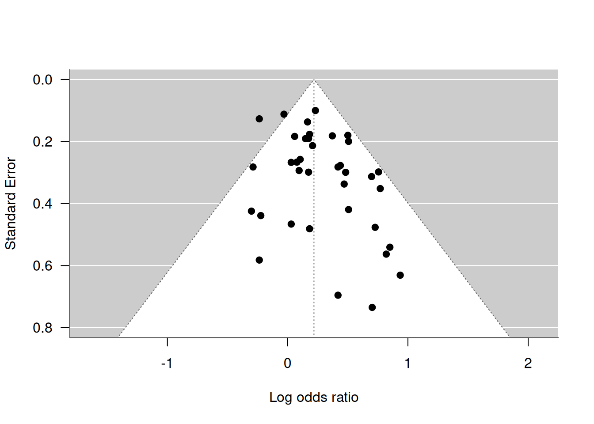
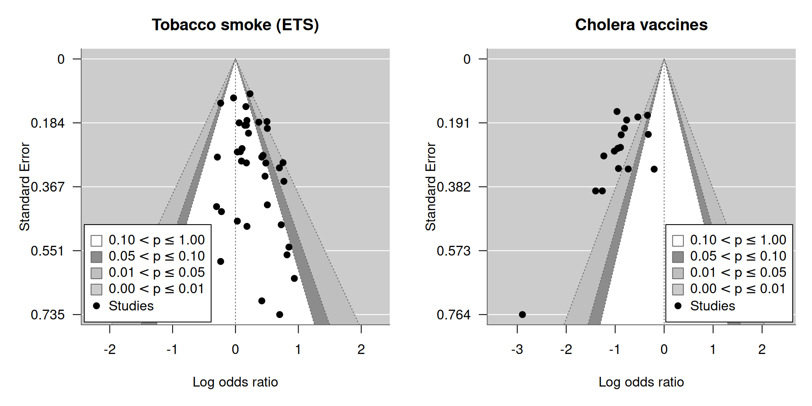
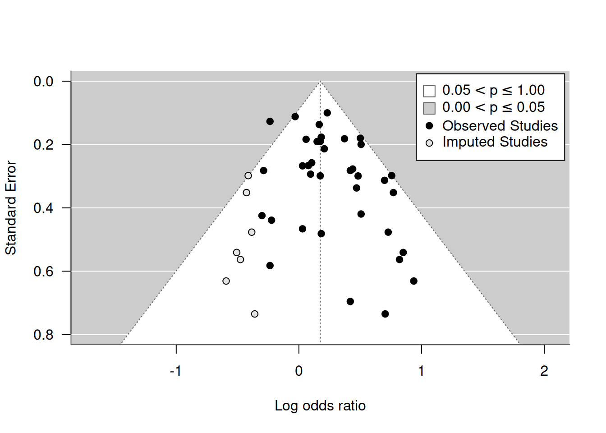
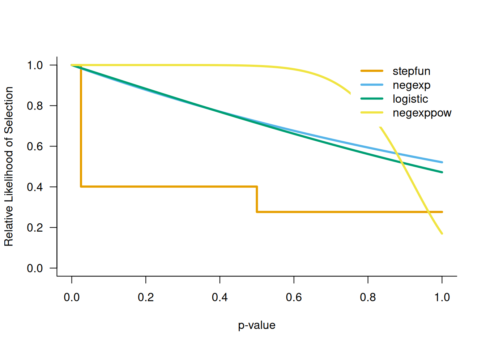
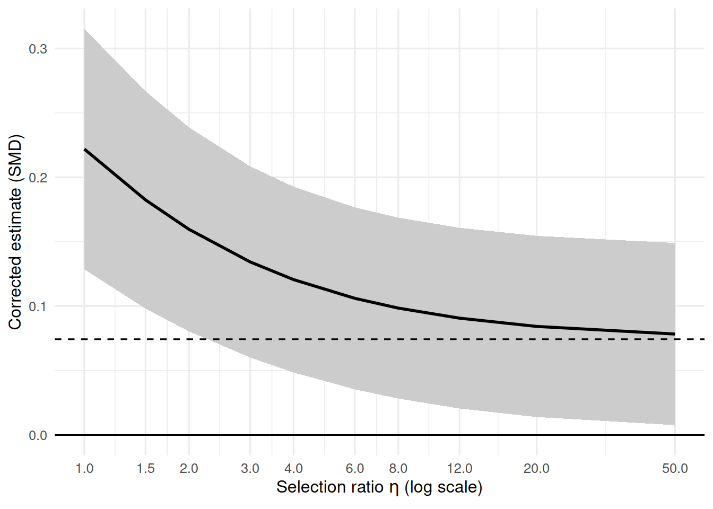
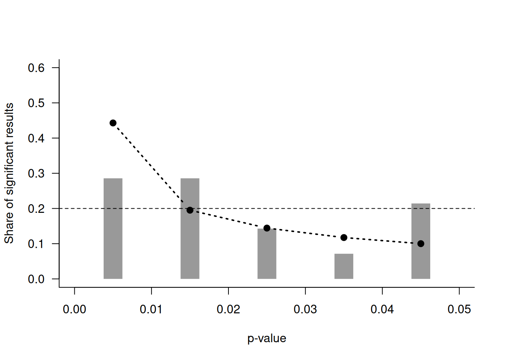
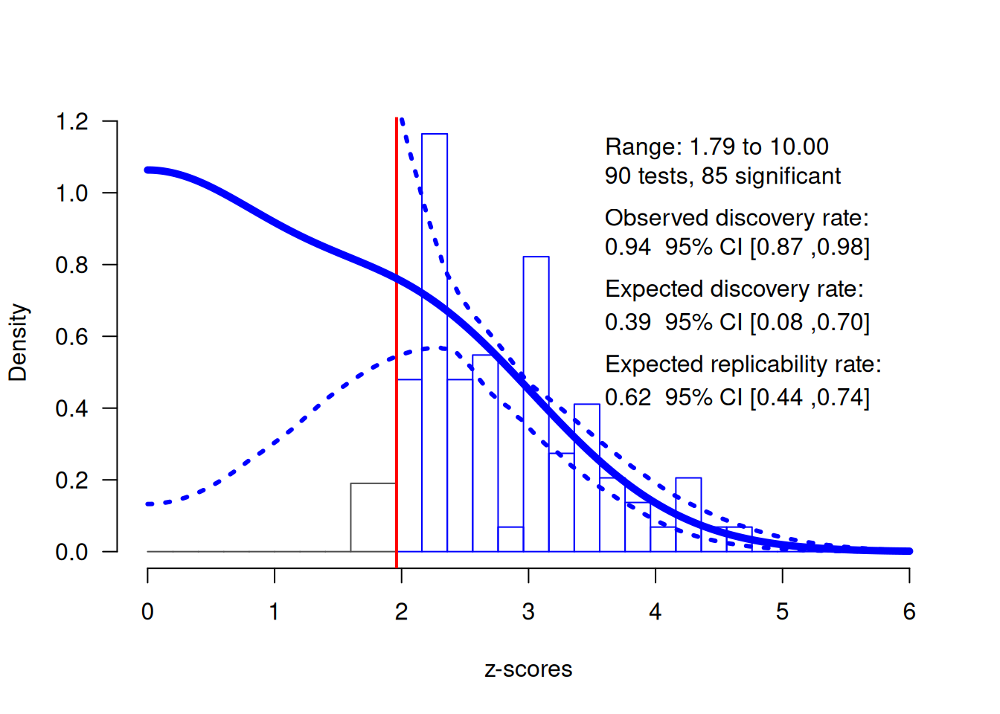

7 Publication Bias and Small-Study Effects
A meta-analysis can only be as good as the set of studies it synthesizes. The models of Chapters 4 and 5 treat the included estimates as a sample from the population of studies that were conducted. That assumption fails whenever the probability that a result becomes available to the meta-analyst depends on the result itself. If statistically significant, large, or “positive” findings are more likely to be published, written up, reported in full, or reported quickly, the literature is a filtered version of the research that was done, and the pooled estimate inherits the filter. Psychology, medicine, economics, and management all have well-documented examples of this problem, and no amount of careful random-effects modeling can repair it after the fact without additional assumptions.
This chapter treats publication bias as a missing-data problem with a non-ignorable missingness mechanism. We first separate the various reporting biases and distinguish them from small-study effects, which are a symptom with many possible causes. We then work through the main families of methods: graphical diagnostics (funnel plots), tests for funnel asymmetry (Egger, Begg, and their variants), adjustment methods based on the funnel (trim-and-fill, PET-PEESE, limit meta-analysis), explicit selection models (step and smooth weight functions, the Copas model, the Andrews-Kasy framework), sensitivity analyses that ask how strong selection would have to be to overturn a conclusion, methods that use only significant \(p\)-values (\(p\)-curve, \(p\)-uniform, \(z\)-curve), the test of excess significance, and robust Bayesian model averaging. The chapter closes with what simulation studies say about these methods and a triangulation workflow. No single method answers the question “is there publication bias, and how large is the true effect?” The practical aim is to report a set of analyses whose assumptions differ, so that readers can see how fragile the conclusion is.
7.1 Reporting biases: a taxonomy
Reporting bias is the umbrella term for any process by which the dissemination of research findings depends on their nature or direction (Rothstein et al. 2005). Several distinct mechanisms fall under it, and they call for different remedies.
Publication bias in the narrow sense is the selective publication of whole studies. Rosenthal (1979) called it the “file drawer problem”: studies with null results stay in researchers’ file drawers. A particularly clean demonstration comes from a cohort of survey experiments funded through a common program in the social sciences, where all studies were known regardless of outcome. Studies with strong results were far more likely to be published than studies with null results, and most null results were never even written up (Franco et al. 2014). The selection operates both at the journal (editors and reviewers) and, often more strongly, at the author (who decides that a null result is not worth the effort of a manuscript).
Outcome reporting bias is selection within studies. A trial measures several outcomes, time points, or subscales, and the ones that reach significance are reported in full while the others are reported vaguely or not at all. Comparisons of trial protocols with publications found that statistically significant outcomes had higher odds of being fully reported than non-significant ones (Chan et al. 2004), and an assessment of Cochrane reviews found that outcome reporting bias was suspected in a substantial share of them and could change conclusions (Kirkham et al. 2010). Outcome reporting bias is invisible to methods that only look at whether a study was published.
Time-lag bias arises because positive results tend to be published sooner than negative ones (Ioannidis 1998). An early meta-analysis therefore oversamples positive findings even if all results are eventually published. Cumulative meta-analysis (Chapter 8) is one way to look for it.
\(p\)-hacking (selective analysis) refers to flexibility in data collection and analysis (optional stopping, covariate choice, outlier exclusion, choice among dependent variables) used until a significant result appears. Simmons et al. (2011) showed by simulation how a few such researcher degrees of freedom can inflate the false-positive rate far above the nominal level, and survey evidence suggests that these practices were common in psychology (John et al. 2012). Unlike publication bias, \(p\)-hacking changes the reported estimates themselves rather than which estimates are seen. It pushes test statistics to just above the significance threshold, which is why methods based on the distribution of significant \(p\)-values (\(p\)-curve, Section 7.12.1) were developed partly with \(p\)-hacking in mind.
Other forms include language bias (significant results more likely to be published in English-language journals), citation bias (significant results cited more and therefore found more easily), and duplicate publication. Their common consequence is that the studies a meta-analyst can locate overrepresent large, significant effects. Comprehensive searches that include trial registries, dissertations, conference abstracts, and regulatory documents (Chapter 2) are the first and best defense. Statistical methods are a second line of defense that relies on strong assumptions.
7.1.1 Small-study effects are not publication bias
The term small-study effects describes the empirical tendency for smaller studies to report larger effects (Sterne et al. 2011). Publication bias is one cause, because small studies need large estimates to reach significance and are therefore more strongly filtered. But there are several others:
- Genuine heterogeneity correlated with study size. Small trials are often conducted in high-risk populations, use more intensive interventions, or are run by the intervention’s developers with better implementation fidelity. If the true effect differs between small and large studies, the funnel is asymmetric even with no missing studies.
- Methodological quality. Small studies are more often poorly randomized or unblinded, and low quality is associated with exaggerated effects.
- Artifacts of the effect-size metric. For odds ratios and standardized mean differences, the estimated standard error is a function of the estimated effect, which induces a correlation between the two even without selection (Section 7.5.3).
- Chance, particularly when the number of studies is small.
The distinction matters for interpretation. A significant Egger test says that effect size and precision are associated; it does not say why. Lau et al. (2006) give an instructive account of how a funnel plot can be misread. Throughout this chapter, “small-study effects” is the descriptive finding and “publication bias” is one candidate explanation that must be argued for with additional evidence, such as contour-enhanced funnel plots, registry data, or the absence of plausible moderators.
7.2 A selection-model view
It helps to have one formal model in mind, because nearly every method in this chapter can be read as a special case or an approximation of it. Let study \(i\) produce an estimate \(y_i\) with known sampling standard error \(\sigma_i\), and let the random-effects model of Chapter 4 hold for the population of conducted studies: \[ y_i \mid \theta_i \sim N(\theta_i, \sigma_i^2), \qquad \theta_i \sim N(\mu, \tau^2), \qquad\text{so}\qquad y_i \sim N(\mu, \sigma_i^2 + \tau^2). \] Publication happens with probability \(w(p_i)\) that depends on the one-sided \(p\)-value \(p_i = 1 - \Phi(y_i/\sigma_i)\) (or more generally on \(y_i\) and \(\sigma_i\)). The density of a published estimate is then the weighted density \[ g(y_i \mid \mu, \tau^2, \omega) = \frac{w(p_i; \omega)\, \phi\!\left(\frac{y_i - \mu}{\sqrt{\sigma_i^2 + \tau^2}}\right)} {\sqrt{\sigma_i^2+\tau^2}\; A_i(\mu, \tau^2, \omega)}, \qquad A_i = \int w(p(y); \omega)\, \frac{1}{\sqrt{\sigma_i^2+\tau^2}}\phi\!\left(\frac{y - \mu}{\sqrt{\sigma_i^2+\tau^2}}\right) dy , \] where \(\phi\) is the standard normal density and \(A_i\) is the probability that a study with standard error \(\sigma_i\) is published (Iyengar and Greenhouse 1988; Hedges 1992; Vevea and Hedges 1995). If \(w\) is constant, \(g\) reduces to the usual likelihood. If \(w\) is larger for small \(p\)-values, published estimates are shifted upward, and the shift is larger for imprecise studies because a larger share of their sampling distribution lies in the region of low publication probability. This is the mechanism behind funnel asymmetry under publication bias, and it explains why the regression-based methods below regress the effect on \(\sigma_i\).
Two consequences follow. First, publication bias biases \(\hat\mu\) and, typically, \(\hat\tau^2\) as well: truncating the distribution of estimates makes them look more homogeneous or more heterogeneous depending on the selection pattern. Second, the selection function is identified only through the shape of the observed distribution of \(y_i\) given \(\sigma_i\). Any method that corrects for selection does so by assuming that, absent selection, this distribution would have a particular form (normal, symmetric, unrelated to \(\sigma_i\)). If that assumption is wrong, for instance because true effects differ systematically between small and large studies, the “correction” can be worse than none.
7.3 Running examples
We use three public datasets from the metadat package (loaded with metafor).
library(meta)
library(metasens)
library(PublicationBias)
library(puniform)
# 1. Environmental tobacco smoke and lung cancer in women (log odds ratios)
ets <- dat.hackshaw1998
ets$sei <- sqrt(ets$vi)
# 2. Writing-to-learn interventions (standardized mean differences)
wtl <- dat.bangertdrowns2004
wtl$sei <- sqrt(wtl$vi)
# 3. Cholera vaccines (log odds ratios computed from 2x2 counts)
chol <- escalc(measure = "OR", ai = ai, n1i = n1i, ci = ci, n2i = n2i,
data = dat.graves2010)
res_ets <- rma(yi, vi, data = ets)
res_wtl <- rma(yi, vi, data = wtl)
res_chol <- rma(yi, vi, data = chol)
c(ets = res_ets$k, wtl = res_wtl$k, chol = res_chol$k)
#> ets wtl chol
#> 37 48 17
predict(res_ets, transf = exp, digits = 3)
#>
#> pred ci.lb ci.ub pi.lb pi.ub
#> 1.245 1.130 1.371 0.914 1.695
res_wtl
#>
#> Random-Effects Model (k = 48; tau^2 estimator: REML)
#>
#> tau^2 (estimated amount of total heterogeneity): 0.0499 (SE = 0.0197)
#> tau (square root of estimated tau^2 value): 0.2235
#> I^2 (total heterogeneity / total variability): 58.37%
#> H^2 (total variability / sampling variability): 2.40
#>
#> Test for Heterogeneity:
#> Q(df = 47) = 107.1061, p-val < .0001
#>
#> Model Results:
#>
#> estimate se zval pval ci.lb ci.ub
#> 0.2219 0.0460 4.8209 <.0001 0.1317 0.3122 ***
#>
#> ---
#> Signif. codes: 0 '***' 0.001 '**' 0.01 '*' 0.05 '.' 0.1 ' ' 1The tobacco-smoke meta-analysis (the data of Hackshaw and colleagues, distributed with
metadat) pools 37 studies of lung cancer among non-smoking women whose spouses smoke. The
random-effects estimate is an odds ratio of about 1.24 (95% CI 1.13 to 1.37), with modest
heterogeneity. The writing-to-learn meta-analysis pools 48 standardized mean differences of
school-based writing interventions on academic achievement. Its random-effects estimate is
\(\hat\mu = 0.222\) (95% CI 0.132 to 0.312) with \(\hat\tau = 0.224\) and \(I^2 = 58\%\). These two
datasets will serve as the medical and the behavioral-science example throughout. The cholera
vaccine data appear in the discussion of contour-enhanced funnel plots and binary-outcome tests.
7.4 Funnel plots
A funnel plot shows each estimate against a measure of its precision, usually the standard error on a reversed vertical axis so that the most precise studies are at the top. In the absence of small-study effects, estimates scatter symmetrically around the pooled value and the scatter narrows as precision increases, giving the shape of an inverted funnel. The pseudo-confidence region drawn around the pooled estimate, \(\hat\mu \pm 1.96\,\sigma\), shows where 95% of estimates would fall if they all estimated the same parameter. Under a random-effects model the expected scatter is \(\sqrt{\sigma^2 + \tau^2}\), so even a symmetric funnel will have points outside the region when heterogeneity is substantial.

Figure 7.1: Funnel plot of the 37 tobacco-smoke studies (log odds ratios). The vertical line marks the random-effects estimate; the triangle is the pseudo 95% confidence region.
Figure 7.1 shows a mild excess of imprecise studies on the right (harmful) side and relatively few in the lower left. Visual inspection is notoriously unreliable, however. Readers asked to judge funnel plots disagree with each other and are strongly influenced by the choice of axis, so a funnel plot should be read as a description of the data, never as a test.
The choice of the vertical axis matters. The standard error is recommended because the expected funnel is then a straight-sided triangle (Sterne et al. 2011). Sample size or its inverse avoids the mechanical dependence between estimate and standard error for some metrics (Section 7.5.3), at the cost of ignoring other determinants of precision. Precision (\(1/\sigma\)) stretches the top of the plot and compresses the bottom, which makes the small studies, where selection is most visible, hard to see.
7.4.1 Contour-enhanced funnel plots
Peters et al. (2008) proposed adding contours of statistical significance to the funnel plot, centered on zero rather than on the pooled estimate. Shaded bands mark the regions in which a study’s two-sided \(p\)-value falls between, say, 0.10 and 0.05, 0.05 and 0.01, and below 0.01. The logic is that publication bias driven by significance should remove studies from the non-significant region (the white area around zero). If the apparent gap in the funnel lies inside the significance regions, significance-driven selection is an unlikely explanation and other causes of asymmetry, such as heterogeneity or quality differences, deserve more attention.
op <- par(mfrow = c(1, 2), mar = c(5, 5, 3, 1))
funnel(res_ets, level = c(90, 95, 99), shade = c("white", "gray55", "gray75"),
refline = 0, legend = "bottomleft", las = 1, main = "Tobacco smoke (ETS)",
xlab = "Log odds ratio")
funnel(res_chol, level = c(90, 95, 99), shade = c("white", "gray55", "gray75"),
refline = 0, legend = "bottomright", las = 1, main = "Cholera vaccines",
xlab = "Log odds ratio")
Figure 7.2: Contour-enhanced funnel plots. Left: tobacco-smoke studies. Right: cholera vaccine trials. Shaded regions mark two-sided p-values between 0.10 and 0.05 (dark grey), between 0.05 and 0.01 (medium grey), and below 0.01 (light grey, the plot background); the white region around zero contains results with p > 0.10.
par(op)The two panels of Figure 7.2 tell different stories. In the tobacco-smoke data most studies, small and large, sit in the white non-significant region: only 7 of 37 are individually significant. Whatever drives the slight asymmetry, it is not primarily that non-significant studies are missing, since many non-significant studies were published. In the cholera vaccine data 15 of 17 trials are significant, the smallest trials show the largest protective effects, and the region where small, non-significant trials would lie (bottom right, near zero) is empty. That pattern is what significance-based selection would produce, although with 17 trials from a handful of research programs, differences in vaccines, populations, and case definitions are equally plausible explanations.
7.5 Tests for funnel-plot asymmetry
7.5.1 Egger’s regression test
Egger et al. (1997) proposed regressing the standardized effect \(y_i/\sigma_i\) on precision \(1/\sigma_i\): \[ \frac{y_i}{\sigma_i} = \beta_0 + \beta_1 \frac{1}{\sigma_i} + \varepsilon_i . \] Multiplying through by \(\sigma_i\) shows that this is equivalent to a weighted least squares regression of \(y_i\) on \(\sigma_i\) with weights \(1/\sigma_i^2\), \[ y_i = \beta_1 + \beta_0\, \sigma_i + \sigma_i \varepsilon_i , \] so the intercept of the original formulation, \(\beta_0\), is the slope on the standard error. In a symmetric funnel the effect does not depend on \(\sigma_i\) and \(\beta_0 = 0\). A test of \(H_0\!: \beta_0 = 0\) is a test for small-study effects. The coefficient \(\beta_1\) is the predicted effect for a hypothetical study with \(\sigma_i = 0\), which motivates the PET estimator of Section 7.7.
The regtest() function in metafor implements several versions (Viechtbauer 2010).
The default fits a mixed-effects meta-regression with the standard error as moderator, which
allows for residual heterogeneity; model = "lm" gives Egger’s original weighted regression
with a multiplicative dispersion parameter. Other predictors (the variance, the sample size, or
transformations of it) can be chosen with predictor.
regtest(res_ets)
#>
#> Regression Test for Funnel Plot Asymmetry
#>
#> Model: mixed-effects meta-regression model
#> Predictor: standard error
#>
#> Test for Funnel Plot Asymmetry: z = 2.1055, p = 0.0352
#> Limit Estimate (as sei -> 0): b = 0.0216 (CI: -0.1774, 0.2207)
regtest(res_wtl)
#>
#> Regression Test for Funnel Plot Asymmetry
#>
#> Model: mixed-effects meta-regression model
#> Predictor: standard error
#>
#> Test for Funnel Plot Asymmetry: z = 2.4904, p = 0.0128
#> Limit Estimate (as sei -> 0): b = -0.0362 (CI: -0.2500, 0.1777)
regtest(res_wtl, model = "lm")
#>
#> Regression Test for Funnel Plot Asymmetry
#>
#> Model: weighted regression with multiplicative dispersion
#> Predictor: standard error
#>
#> Test for Funnel Plot Asymmetry: t = 2.7077, df = 46, p = 0.0095
#> Limit Estimate (as sei -> 0): b = -0.0558 (CI: -0.2375, 0.1259)Both datasets show evidence of small-study effects. For the tobacco data, \(z = 2.11\) and
\(p = 0.035\); for writing-to-learn, \(z = 2.49\) and \(p = 0.013\) under the mixed-effects version and
\(t_{46} = 2.71\), \(p = 0.010\) under Egger’s original specification. The “limit estimate” printed by
regtest() is the intercept of the meta-regression, the predicted effect as
\(\sigma_i \to 0\). For writing-to-learn it is \(-0.036\) (95% CI \(-0.250\) to \(0.178\)), far below the
naive estimate of 0.22. We return to the interpretation of this number in Section
7.7.
Egger’s test has low power when the number of studies is small. The usual recommendation is not to run it with fewer than 10 studies, and even with more studies a non-significant result is weak evidence of absence of bias (Sterne et al. 2011). Its Type I error rate is inflated for odds ratios and standardized mean differences, for reasons discussed next.
7.5.2 Begg and Mazumdar’s rank correlation
Begg and Mazumdar (1994) proposed a non-parametric alternative. Each estimate is standardized relative to the common-effect estimate \(\hat\mu_{FE}\) with variance \(v_{FE} = 1/\sum_j \sigma_j^{-2}\), \[ y_i^* = \frac{y_i - \hat\mu_{FE}}{\sqrt{\sigma_i^2 - v_{FE}}} , \] and Kendall’s rank correlation \(\tau_K\) between \(y_i^*\) and \(\sigma_i^2\) is tested against zero.
ranktest(res_ets)
#>
#> Rank Correlation Test for Funnel Plot Asymmetry
#>
#> Kendall's tau = 0.1441, p = 0.2157
ranktest(res_wtl)
#>
#> Rank Correlation Test for Funnel Plot Asymmetry
#>
#> Kendall's tau = 0.2179, p = 0.0294The rank test is generally less powerful than the regression test, and the two datasets show this. For writing-to-learn the rank test agrees with Egger’s test (\(\tau_K = 0.218\), \(p = 0.029\)), but for the tobacco data it does not detect the asymmetry that the regression test found (\(\tau_K = 0.144\), \(p = 0.22\)). The rank correlation is mostly of historical interest and is reported for comparability with older meta-analyses.
7.5.3 Standardized mean differences and the artifactual correlation
For several effect-size metrics the estimated sampling variance is a function of the estimated effect. For the standardized mean difference with group sizes \(n_1\) and \(n_2\), \[ \hat\sigma_i^2 = \frac{n_1 + n_2}{n_1 n_2} + \frac{d_i^2}{2(n_1 + n_2)} , \] so larger \(|d_i|\) mechanically produce larger standard errors. Egger’s regression then detects a correlation between \(d_i\) and \(\hat\sigma_i\) even in the complete, unselected literature, and its Type I error rate is inflated, especially when the true effect is large and samples are small. Pustejovsky and Rodgers (2019) showed that the problem disappears if the standard error is replaced by a predictor that depends only on the sample sizes, the first term of the variance: \[ W_i = \sqrt{\frac{1}{n_{1i}} + \frac{1}{n_{2i}}} . \] The same logic applies to log odds ratios, whose variance depends on the event counts.
The writing-to-learn data report only the total sample size \(N_i\), so we approximate equal
group sizes, \(W_i = \sqrt{4/N_i}\). The regtest() option predictor = "sqrtninv" uses
\(1/\sqrt{N_i}\), which differs from \(W_i\) by a constant factor and gives the same test.
wtl$W <- sqrt(4 / wtl$ni)
rma(yi, vi, mods = ~ W, data = wtl)
#>
#> Mixed-Effects Model (k = 48; tau^2 estimator: REML)
#>
#> tau^2 (estimated amount of residual heterogeneity): 0.0377 (SE = 0.0169)
#> tau (square root of estimated tau^2 value): 0.1942
#> I^2 (residual heterogeneity / unaccounted variability): 51.12%
#> H^2 (unaccounted variability / sampling variability): 2.05
#> R^2 (amount of heterogeneity accounted for): 24.46%
#>
#> Test for Residual Heterogeneity:
#> QE(df = 46) = 94.4378, p-val < .0001
#>
#> Test of Moderators (coefficient 2):
#> QM(df = 1) = 4.6997, p-val = 0.0302
#>
#> Model Results:
#>
#> estimate se zval pval ci.lb ci.ub
#> intrcpt -0.0115 0.1133 -0.1011 0.9195 -0.2336 0.2107
#> W 1.1177 0.5156 2.1679 0.0302 0.1072 2.1282 *
#>
#> ---
#> Signif. codes: 0 '***' 0.001 '**' 0.01 '*' 0.05 '.' 0.1 ' ' 1
regtest(res_wtl, predictor = "sqrtninv")
#>
#> Regression Test for Funnel Plot Asymmetry
#>
#> Model: mixed-effects meta-regression model
#> Predictor: inverse of the square root sample size
#>
#> Test for Funnel Plot Asymmetry: z = 2.1679, p = 0.0302
#> Limit Estimate (as ni -> inf): b = -0.0115 (CI: -0.2336, 0.2107)With the modified predictor the slope is 1.118 (\(z = 2.17\), \(p = 0.030\)), smaller than with the standard error but still positive. For these data the artifactual component is minor because most effects are small, so \(d_i^2/2N\) contributes little to the variance. With larger effects (say \(d > 0.8\)) and small samples the difference between the two versions can be decisive.
7.5.4 Binary outcomes
For odds ratios, two alternatives to Egger’s test with better Type I error control are widely
used in medicine. Roger M. Harbord et al. (2006) replace the log odds ratio and its estimated variance by
the efficient score \(Z_i\) and score variance \(V_i\) of the log odds ratio, regressing \(Z_i/\sqrt{V_i}\)
on \(\sqrt{V_i}\); unlike the usual variance of the log odds ratio, \(V_i\) is computed under the null
and does not depend on the estimated effect. Peters (2006) regress the log odds ratio on
the inverse of the total sample size, with weights based on the average event probability. Both
are implemented in meta::metabias().
m_chol <- metabin(event.e = ai, n.e = n1i, event.c = ci, n.c = n2i,
studlab = study, data = chol, sm = "OR")
metabias(m_chol, method.bias = "Egger")
#> Linear regression test of funnel plot asymmetry
#>
#> Test result: t = -2.55, df = 15, p-value = 0.0224
#> Bias estimate: -2.3891 (SE = 0.9383)
#>
#> Details:
#> - multiplicative residual heterogeneity variance (tau^2 = 1.5354)
#> - response: log odds ratio
#> - predictor: standard error
#> - weight: inverse variance
#> - reference: Egger et al. (1997), BMJ
metabias(m_chol, method.bias = "Harbord")
#> Linear regression test of funnel plot asymmetry
#>
#> Test result: t = -2.69, df = 15, p-value = 0.0166
#> Bias estimate: -3.0908 (SE = 1.1469)
#>
#> Details:
#> - multiplicative residual heterogeneity variance (tau^2 = 2.0042)
#> - response: efficient score (odds ratio)
#> - predictor: standard error of efficient score
#> - weight: inverse variance of score
#> - reference: Harbord et al. (2006), Stat Med
metabias(m_chol, method.bias = "Peters")
#> Linear regression test of funnel plot asymmetry
#>
#> Test result: t = -1.11, df = 15, p-value = 0.2836
#> Bias estimate: -6164.6575 (SE = 5543.7986)
#>
#> Details:
#> - multiplicative residual heterogeneity variance (tau^2 = 11.2466)
#> - response: log odds ratio
#> - predictor: inverse of total sample size
#> - weight: inverse variance of average event probability
#> - reference: Peters et al. (2006), JAMAEgger’s test (\(t_{15} = -2.55\), \(p = 0.022\)) and Harbord’s test (\(t_{15} = -2.69\), \(p = 0.017\)) both flag asymmetry in the cholera vaccine data; the negative bias estimates mean that smaller trials report more protective effects. Peters’ test, which uses the inverse sample size as predictor, does not (\(t_{15} = -1.11\), \(p = 0.28\)). Disagreement of this kind is common with 17 studies, and it is a reminder that these tests answer slightly different questions with low power. For binary outcomes, Harbord’s and Peters’ tests should take precedence over the classical Egger test because their Type I error rates are closer to nominal (Sterne et al. 2011), and a conclusion should not rest on whichever test happens to be significant.
7.6 Trim-and-fill
The trim-and-fill method of Duval and Tweedie (2000) estimates the number of studies “missing” from one side of the funnel, imputes their mirror images, and re-estimates the pooled effect. The algorithm iterates: (1) estimate the center of the funnel; (2) estimate the number \(k_0\) of asymmetric studies on the side with more extreme results from the ranks of the deviations \(|y_i - \hat\mu|\) (the \(L_0\) and \(R_0\) estimators); (3) trim the \(k_0\) most extreme studies and re-estimate the center from the remaining symmetric part; repeat until \(k_0\) stabilizes; (4) fill in the trimmed studies together with their mirror images about the final center and compute the adjusted estimate.
tf_ets <- trimfill(res_ets)
tf_ets
#>
#> Estimated number of missing studies on the left side: 7 (SE = 4.0399)
#>
#> Random-Effects Model (k = 44; tau^2 estimator: REML)
#>
#> tau^2 (estimated amount of total heterogeneity): 0.0245 (SE = 0.0182)
#> tau (square root of estimated tau^2 value): 0.1564
#> I^2 (total heterogeneity / total variability): 28.80%
#> H^2 (total variability / sampling variability): 1.40
#>
#> Test for Heterogeneity:
#> Q(df = 43) = 60.4755, p-val = 0.0404
#>
#> Model Results:
#>
#> estimate se zval pval ci.lb ci.ub
#> 0.1745 0.0484 3.6024 0.0003 0.0795 0.2694 ***
#>
#> ---
#> Signif. codes: 0 '***' 0.001 '**' 0.01 '*' 0.05 '.' 0.1 ' ' 1
predict(tf_ets, transf = exp, digits = 3)
#>
#> pred ci.lb ci.ub pi.lb pi.ub
#> 1.191 1.083 1.309 0.864 1.641
funnel(tf_ets, las = 1, ylim = c(0, 0.8), digits = list(1L, 1), legend = TRUE,
xlab = "Log odds ratio")
Figure 7.3: Trim-and-fill applied to the tobacco-smoke studies. Open circles are the seven imputed mirror-image studies.
tf_wtl <- trimfill(res_wtl)
tf_wtl
#>
#> Estimated number of missing studies on the left side: 7 (SE = 4.5551)
#>
#> Random-Effects Model (k = 55; tau^2 estimator: REML)
#>
#> tau^2 (estimated amount of total heterogeneity): 0.0905 (SE = 0.0282)
#> tau (square root of estimated tau^2 value): 0.3009
#> I^2 (total heterogeneity / total variability): 69.85%
#> H^2 (total variability / sampling variability): 3.32
#>
#> Test for Heterogeneity:
#> Q(df = 54) = 145.1412, p-val < .0001
#>
#> Model Results:
#>
#> estimate se zval pval ci.lb ci.ub
#> 0.1586 0.0527 3.0105 0.0026 0.0553 0.2618 **
#>
#> ---
#> Signif. codes: 0 '***' 0.001 '**' 0.01 '*' 0.05 '.' 0.1 ' ' 1For the tobacco data trim-and-fill imputes 7 studies on the left and reduces the pooled odds ratio from 1.24 to about 1.19 (Figure 7.3). For writing-to-learn it also imputes 7 studies and reduces \(\hat\mu\) from 0.222 to 0.159 (95% CI 0.055 to 0.262). Note that \(\hat\tau^2\) nearly doubles, from 0.050 to 0.091, because the imputed studies are by construction far from the center.
Trim-and-fill is popular because it is intuitive and produces a single “adjusted” number, but its limitations are serious. It assumes that asymmetry is caused by the suppression of the most extreme negative results, which is not how significance-based selection works: selection removes non-significant results, which may lie near the center. Under heterogeneity, trim-and-fill can impute studies when there is no publication bias at all (Terrin et al. 2003), and when bias is present it reduces the bias of the pooled estimate but does not remove it (Peters et al. 2007). The imputed studies are fictitious and the confidence interval of the filled-in analysis does not reflect the uncertainty of the imputation. Trim-and-fill is best regarded as a sensitivity analysis that asks “what if the funnel were symmetric?”, not as a correction.
7.7 PET-PEESE
The regression in Section 7.5.1 suggests a simple correction: use the intercept, the predicted effect for an infinitely precise study, as the bias-adjusted estimate. Stanley and Doucouliagos (2014) call the linear version the precision-effect test (PET), \[ y_i = \beta_0 + \beta_1 \sigma_i + \varepsilon_i, \] and a quadratic version the precision-effect estimate with standard error (PEESE), \[ y_i = \beta_0 + \beta_1 \sigma_i^2 + \varepsilon_i, \] both fitted by weighted least squares with weights \(1/\sigma_i^2\). The rationale for PEESE is that under significance-based selection the bias is approximately proportional to \(\sigma_i^2\) when the true effect is non-zero, while PET is a better approximation when the true effect is zero. Because PET is biased downward when there is a genuine effect, Stanley and Doucouliagos (2014) recommend a conditional estimator: test \(H_0\!: \beta_0 \le 0\) with PET (one-sided, \(\alpha = 0.05\)); if it is rejected, report the PEESE intercept, otherwise report the PET intercept.
Stanley and Doucouliagos fit these models by ordinary weighted least squares with a
multiplicative dispersion parameter (lm() with weights). Many applied meta-analysts fit them as
random-effects meta-regressions with rma(), which allows for additive heterogeneity. We fit both.
pet_re <- rma(yi, vi, mods = ~ sei, data = wtl)
peese_re <- rma(yi, vi, mods = ~ vi, data = wtl)
pet_wls <- lm(yi ~ sei, weights = 1 / vi, data = wtl)
peese_wls <- lm(yi ~ vi, weights = 1 / vi, data = wtl)
# intercept, SE, and one-sided p-value for H0: beta0 <= 0
icpt <- function(fit) {
if (inherits(fit, "rma")) {
est <- coef(fit)[1]; se <- fit$se[1]; p1 <- pnorm(est / se, lower.tail = FALSE)
} else {
cf <- summary(fit)$coefficients
est <- cf[1, 1]; se <- cf[1, 2]
p1 <- pt(est / se, df = fit$df.residual, lower.tail = FALSE)
}
c(estimate = unname(est), se = unname(se), p_one_sided = unname(p1))
}
pp <- rbind(PET_rma = icpt(pet_re), PEESE_rma = icpt(peese_re),
PET_wls = icpt(pet_wls), PEESE_wls = icpt(peese_wls))
round(pp, 3)
#> estimate se p_one_sided
#> PET_rma -0.036 0.109 0.630
#> PEESE_rma 0.104 0.067 0.058
#> PET_wls -0.056 0.090 0.730
#> PEESE_wls 0.071 0.055 0.102
# conditional PET-PEESE rule
pet_peese <- function(pet, peese, alpha = 0.05) {
use_peese <- icpt(pet)["p_one_sided"] < alpha
out <- if (use_peese) icpt(peese) else icpt(pet)
data.frame(selected = if (use_peese) "PEESE" else "PET",
estimate = round(out[["estimate"]], 3), se = round(out[["se"]], 3))
}
rbind(rma = pet_peese(pet_re, peese_re), wls = pet_peese(pet_wls, peese_wls))
#> selected estimate se
#> rma PET -0.036 0.109
#> wls PET -0.056 0.090For writing-to-learn, the PET intercept is negative and not significantly greater than zero under either specification (\(-0.036\) in the random-effects version, \(-0.056\) with WLS), so the conditional rule selects PET and the bias-adjusted estimate is essentially zero. PEESE would give a positive but smaller estimate than the naive pooled value. Taken at face value, PET-PEESE says that once small-study effects are accounted for, there is no evidence that writing-to-learn interventions improve achievement.
That conclusion should not be taken at face value. PET-PEESE attributes the entire association between effect size and standard error to bias. In education research, small studies often evaluate more intensive or better-implemented interventions, which would produce the same pattern. The method also performs poorly when heterogeneity is very large, when there are only a few studies, and when all studies are small (Stanley 2017); in the last case the intercept is an extrapolation far outside the observed range of standard errors. Here the most precise study has \(\sigma_i \approx 0.08\), so the intercept is extrapolated well beyond the observed range. PET-PEESE is most useful as one member of a set of sensitivity analyses rather than as the preferred estimate.
PET-PEESE also takes the reported standard errors at face value. In observational research the standard error is itself a product of analytic choices (clustering, robust variance estimators, specification), and if those choices are made until a result is significant, the reported precision is spuriously high and the regressor is correlated with the error term. The meta-analysis instrumental-variable estimator (MAIVE), which replaces the reported standard error by its projection on the inverse sample size, is described with the other economics methods in Section 14.3.4. Cluster-robust versions of PET-PEESE for several estimates per study appear in Section 14.7.4.
7.8 Selection models
Selection models estimate the weighted likelihood of Section 7.2 directly. They make the selection process explicit, they can be compared with the unadjusted model by a likelihood-ratio test, and their parameters are interpretable as relative publication probabilities (Hedges 1992; Vevea and Hedges 1995). The cost is that they rest on the assumed shape of both the effect distribution (normal) and the weight function.
7.8.1 The three-parameter selection model
The most widely used specification is a step function with a single cut point at one-sided
\(p = 0.025\), which corresponds to two-sided significance at 0.05 in the expected direction:
\[
w(p_i) = \begin{cases} 1 & p_i \le 0.025 \\ \omega & p_i > 0.025 . \end{cases}
\]
With \(\mu\), \(\tau^2\), and \(\omega\) to estimate, this is the three-parameter selection model
(3PSM). The parameter \(\omega\) is the probability that a non-significant result is published
relative to a significant one. In metafor, selmodel() takes a fitted rma object and
re-estimates it by maximum likelihood under the chosen weight function.
sel3 <- selmodel(res_wtl, type = "stepfun", steps = 0.025)
sel3
#>
#> Random-Effects Model (k = 48; tau^2 estimator: ML)
#>
#> tau^2 (estimated amount of total heterogeneity): 0.0276 (SE = 0.0238)
#> tau (square root of estimated tau^2 value): 0.1660
#>
#> Test for Heterogeneity:
#> LRT(df = 1) = 2.2498, p-val = 0.1336
#>
#> Model Results:
#>
#> estimate se zval pval ci.lb ci.ub
#> 0.1477 0.0732 2.0184 0.0435 0.0043 0.2911 *
#>
#> Test for Selection Model Parameters:
#> LRT(df = 1) = 1.1635, p-val = 0.2807
#>
#> Selection Model Results:
#>
#> k estimate se zval pval ci.lb ci.ub
#> 0 < p <= 0.025 14 1.0000 --- --- --- --- ---
#> 0.025 < p <= 1 34 0.4665 0.3496 -1.5259 0.1270 0.0000 1.1518
#>
#> ---
#> Signif. codes: 0 '***' 0.001 '**' 0.01 '*' 0.05 '.' 0.1 ' ' 1For writing-to-learn the estimated relative publication probability of non-significant results is \(\hat\omega = 0.47\): they are estimated to be published about half as often as significant ones. The adjusted mean is \(\hat\mu = 0.148\) (95% CI 0.004 to 0.291), roughly two-thirds of the unadjusted estimate, with \(\hat\tau = 0.166\). The likelihood-ratio test of \(H_0\!: \omega = 1\) is not significant (\(\chi^2_1 = 1.16\), \(p = 0.28\)). The confidence interval for \(\omega\) runs from 0 to 1.15, which illustrates how weakly a dataset of 48 studies identifies the selection process.
A four-parameter model adds a cut at \(p = 0.5\), separating results that are non-significant but in the expected direction from those in the opposite direction:
sel4 <- selmodel(res_wtl, type = "stepfun", steps = c(0.025, 0.5))
sel4
#>
#> Random-Effects Model (k = 48; tau^2 estimator: ML)
#>
#> tau^2 (estimated amount of total heterogeneity): 0.0274 (SE = 0.0262)
#> tau (square root of estimated tau^2 value): 0.1655
#>
#> Test for Heterogeneity:
#> LRT(df = 1) = 1.8660, p-val = 0.1719
#>
#> Model Results:
#>
#> estimate se zval pval ci.lb ci.ub
#> 0.1057 0.0903 1.1703 0.2419 -0.0713 0.2827
#>
#> Test for Selection Model Parameters:
#> LRT(df = 2) = 1.6810, p-val = 0.4315
#>
#> Selection Model Results:
#>
#> k estimate se zval pval ci.lb ci.ub
#> 0 < p <= 0.025 14 1.0000 --- --- --- --- ---
#> 0.025 < p <= 0.5 23 0.4014 0.3273 -1.8290 0.0674 0.0000 1.0429 .
#> 0.5 < p <= 1 11 0.2764 0.2964 -2.4412 0.0146 0.0000 0.8574 *
#>
#> ---
#> Signif. codes: 0 '***' 0.001 '**' 0.01 '*' 0.05 '.' 0.1 ' ' 1The adjusted mean drops to 0.106 and its confidence interval now includes zero. The weights for the two non-significant intervals (0.40 and 0.28) are both below 1, again with wide intervals. The two step models differ by 0.04 in \(\hat\mu\), a reminder that the adjusted estimate depends on the assumed shape of the selection function.
7.8.2 Other weight functions
Step functions assume that publication decisions change abruptly at conventional thresholds.
Smooth weight functions assume a gradual decline in publication probability as \(p\) increases.
selmodel() offers several, each with one or two parameters \(\delta\): the beta function
\(w(p) = p^{\delta_1 - 1}(1-p)^{\delta_2 - 1}\), the half-normal \(w(p) = \exp(-\delta p^2)\), the
negative exponential \(w(p) = \exp(-\delta p)\), a logistic function, the power function
\(w(p) = (1-p)^{\delta}\), and the negative-exponential-power function. The loop below fits all of
them and collects the results. Two details matter. Fits that run into numerical problems produce
warnings rather than errors (typically, the Hessian cannot be inverted, so no standard errors are
available), and these must be recorded rather than ignored. And when weight functions are
overlaid, they must be on the same scale: rescaling only some curves misleads, and plot(..., scale = TRUE) would stretch each curve to span 0 to 1, which exaggerates differences. Except for
the beta function, every weight function equals 1 as \(p \to 0\), so the unscaled curves are
directly comparable, and we plot only the fits that succeeded.
types <- c("stepfun", "beta", "halfnorm", "negexp", "logistic", "power", "negexppow")
fit_sel <- function(type) {
msgs <- character(0)
fit <- withCallingHandlers(
selmodel(res_wtl, type = type,
steps = if (type == "stepfun") c(0.025, 0.5, 1) else NA,
control = list(pval.min = if (type %in% c("beta", "negexppow")) 1e-4 else 0)),
warning = function(w) {
msgs <<- c(msgs, conditionMessage(w))
invokeRestart("muffleWarning")
})
fit$fit_warning <- if (length(msgs)) paste(unique(msgs), collapse = "; ") else ""
fit
}
sel_all <- lapply(types, fit_sel)
names(sel_all) <- types
sel_tab <- data.frame(
weight_fn = types,
mu = sapply(sel_all, function(f) f$beta[1]),
ci_lb = sapply(sel_all, function(f) f$ci.lb[1]),
ci_ub = sapply(sel_all, function(f) f$ci.ub[1]),
tau = sapply(sel_all, function(f) sqrt(f$tau2)),
LRT_p = sapply(sel_all, function(f) f$LRTp),
warning = sapply(sel_all, function(f) f$fit_warning),
row.names = NULL)
knitr::kable(sel_tab, digits = 3,
caption = "Selection models with different weight functions, writing-to-learn data.")| weight_fn | mu | ci_lb | ci_ub | tau | LRT_p | warning |
|---|---|---|---|---|---|---|
| stepfun | 0.106 | -0.071 | 0.283 | 0.165 | 0.431 | |
| beta | 0.531 | NA | NA | 0.483 | 0.036 | Error when trying to invert the Hessian. |
| halfnorm | 0.153 | NA | NA | 0.254 | 0.462 | Error when trying to invert the Hessian. |
| negexp | 0.165 | -0.070 | 0.400 | 0.230 | 0.582 | |
| logistic | 0.159 | -0.082 | 0.399 | 0.235 | 0.552 | |
| power | -0.008 | NA | NA | 0.356 | 0.161 | Error when trying to invert the Hessian. |
| negexppow | 0.158 | -0.073 | 0.388 | 0.286 | 0.566 |
ok <- types[sel_tab$warning == ""]
cols <- palette.colors(length(ok) + 1, palette = "Okabe-Ito")[-1]
for (j in seq_along(ok)) {
plot(sel_all[[ok[j]]], ylim = c(0, 1), add = j > 1, col = cols[j],
lwd = 3, rug = FALSE, las = 1, bty = "l")
}
legend("topright", legend = ok, col = cols, lwd = 3, bg = "white", box.col = "white")
Figure 7.4: Estimated weight functions (relative probability of publication as a function of the one-sided p-value) for the selection models whose fits succeeded. Writing-to-learn data.
Four of the seven weight functions (the step function, negative exponential, logistic, and negative-exponential-power) give adjusted means between about 0.11 and 0.17, all with confidence intervals that include zero. The beta, half-normal, and power functions produce warnings because the Hessian could not be inverted, so no standard errors or confidence intervals are available, and their point estimates range from below zero to an implausible 0.53. These are not “alternative estimates” to be averaged with the others; they are failed fits, symptoms of a likelihood that is nearly flat in some direction. Reporting them as if they were estimates is a common error. Figure 7.4 shows that the well-behaved weight functions agree that publication probability falls as \(p\) increases but disagree about how steeply.
7.8.3 weightr
The weightr package implements the Vevea-Hedges step-function model and its extension with
moderators of the effect size (Coburn and Vevea 2015). Its output places the unadjusted and
adjusted models side by side. We call it with the :: operator rather than attaching the
package, because weightr masks metafor’s funnel() function and the metadat copy of the
writing-to-learn data.
weightr::weightfunct(effect = wtl$yi, v = wtl$vi, steps = c(0.025, 1))
#>
#> Unadjusted Model (k = 48):
#>
#> tau^2 (estimated amount of total heterogeneity): 0.0471 (SE = 0.0220)
#> tau (square root of estimated tau^2 value): 0.2169
#>
#> Test for Heterogeneity:
#> Q(df = 47) = 107.1061, p-val = 2.118e-06
#>
#> Model Results:
#>
#> estimate std.error z-stat p-val ci.lb ci.ub
#> Intercept 0.2207 0.04628 4.769 1.9e-06 0.13 0.3114
#>
#> Adjusted Model (k = 48):
#>
#> tau^2 (estimated amount of total heterogeneity): 0.0276 (SE = 0.0238)
#> tau (square root of estimated tau^2 value): 0.1660
#>
#> Test for Heterogeneity:
#> Q(df = 47) = 107.1061, p-val = 2.118e-06
#>
#> Model Results:
#>
#> estimate std.error z-stat p-val ci.lb ci.ub
#> Intercept 0.1477 0.07311 2.020 0.043 0.004358 0.2909
#> 0.025 < p < 1 0.4664 0.34924 1.336 0.182 -0.218065 1.1509
#>
#> Likelihood Ratio Test:
#> X^2(df = 1) = 1.164, p-val = 0.28The results agree with selmodel() to the third decimal (\(\hat\mu = 0.148\),
\(\hat\omega = 0.466\), likelihood-ratio \(\chi^2_1 = 1.16\)), as they should, since the two
packages maximize the same likelihood. weightr additionally allows moderators in the mean
model (mods = ~ x) and fixed, user-specified weights (weights =), which is useful for the
Vevea-Woods style sensitivity analysis in which the weights are fixed at values representing
moderate or severe selection rather than estimated.
7.8.4 Identification and interpretation
Selection models are identified by distributional assumptions. The model “knows” that studies are missing because the observed distribution of \(y_i\) given \(\sigma_i\) departs from the normal distribution it would have under no selection. If the true effects are not normally distributed, for instance if they are skewed or form clusters, the model will misattribute the departure to selection. Several practical consequences follow.
The number of studies matters a great deal. With fewer than about 20 to 30 studies, or with few
studies in some \(p\)-value interval, the weights are poorly estimated and the likelihood can be
flat. selmodel() warns when an interval contains no observed \(p\)-values; such models should not
be reported. Heterogeneity and selection are partially confounded: a long right tail can be
explained either by large \(\tau\) or by strong selection. Selection models perform comparatively
well in simulations (McShane et al. 2016; Carter et al. 2019), but their confidence
intervals are wide, which is an honest reflection of how little the data say about the missing
studies. Finally, the parameters of the weight function describe relative probabilities. A
value \(\hat\omega = 0.5\) does not mean that half of the non-significant studies are missing,
only that they are half as likely as significant ones to appear.
7.9 Identifying selection from the meta-analysis itself
Andrews and Kasy (2019) formalized when the selection function is nonparametrically identified. They consider two designs. With replication studies, where an original study and a replication estimate the same parameter and the replication is published regardless of its result, the asymmetry between originals and replications identifies the selection function. With a meta-study of many estimates, selection is identified under the assumption that the latent true effects are statistically independent of the standard errors, so that, absent selection, the distribution of estimates for imprecise studies is a noisier version of the distribution for precise studies. Any systematic departure from this pattern is attributed to selection on the \(z\)-statistic.
Their parametric implementation is a step-function selection model with cut points at the
critical values \(z = \pm 1.96\), allowing different publication probabilities for significant
positive, non-significant, and significant negative results, combined with a normal or \(t\)
distribution of true effects. In one-sided \(p\)-value terms, the cut points are 0.025 and 0.975,
so the same model can be fitted with selmodel():
sel_ak <- selmodel(res_wtl, type = "stepfun", steps = c(0.025, 0.975))
sel_ak
#>
#> Random-Effects Model (k = 48; tau^2 estimator: ML)
#>
#> tau^2 (estimated amount of total heterogeneity): 0.0240 (SE = 0.0251)
#> tau (square root of estimated tau^2 value): 0.1548
#>
#> Test for Heterogeneity:
#> LRT(df = 1) = 1.6454, p-val = 0.1996
#>
#> Model Results:
#>
#> estimate se zval pval ci.lb ci.ub
#> 0.1476 0.0726 2.0321 0.0421 0.0052 0.2900 *
#>
#> Test for Selection Model Parameters:
#> LRT(df = 2) = 1.2396, p-val = 0.5380
#>
#> Selection Model Results:
#>
#> k estimate se zval pval ci.lb ci.ub
#> 0 < p <= 0.025 14 1.0000 --- --- --- --- ---
#> 0.025 < p <= 0.975 33 0.4439 0.3483 -1.5966 0.1104 0.0000 1.1266
#> 0.975 < p <= 1 1 0.6422 0.8688 -0.4119 0.6804 0.0000 2.3450
#>
#> ---
#> Signif. codes: 0 '***' 0.001 '**' 0.01 '*' 0.05 '.' 0.1 ' ' 1The non-significant results are estimated to be published at 0.44 times the rate of significant positive results, and the adjusted mean (0.148) is close to the 3PSM estimate. The weight for significant negative results rests on a single study and is essentially unidentified (95% CI 0 to 2.35). Applying this framework to replication data from experimental economics and psychology, Andrews and Kasy (2019) estimated that statistically significant results were considerably more likely to be published than non-significant ones. Two caveats deserve emphasis. The independence of true effects and standard errors is the key identifying assumption, and it fails exactly when researchers choose sample sizes based on anticipated effects (through power analysis) or when small studies differ in design. The authors also provide a web application for their estimator, which is convenient for exploration but should be complemented by scripted, reproducible code such as the above.
7.10 The Copas selection model and limit meta-analysis
Copas (2000) proposed a selection model in which publication depends on a latent propensity
\(z_i = \gamma_0 + \gamma_1/\sigma_i + \delta_i\), with \(\delta_i\) correlated with the study’s
residual (correlation \(\rho\)). Study \(i\) is published if \(z_i > 0\), so larger studies (larger
\(1/\sigma_i\)) are more likely to be published, and if \(\rho > 0\), studies with larger effects
are too. Because \(\gamma_0\) and \(\gamma_1\) are not identified from the observed data, the
method is a sensitivity analysis: it fits the model over a grid of \((\gamma_0, \gamma_1)\) values,
each implying a probability of publication for the smallest study, and reports how the adjusted
estimate changes. The adjusted estimate reported by metasens::copas() is the one with the least
selection that is consistent with the data, in the sense that a test of residual selection bias
is no longer significant at the 10% level.
m_ets <- metagen(TE = yi, seTE = sei, studlab = paste(author, year),
data = ets, sm = "OR")
cop_ets <- copas(m_ets)
cop_ets
#> Copas selection model analysis
#>
#> p.publ OR 95%-CI tau^2 tau p.trt p.rsb N
#> 1.0000 1.2425 [1.1255; 1.3716] 0.0204 0.1427 < 0.0001 0.0371 0
#> 0.9296 1.2218 [1.1063; 1.3493] 0.0189 0.1374 < 0.0001 0.0641 2
#> 0.8612 1.1974 [1.0855; 1.3208] 0.0184 0.1358 0.0003 0.1142 4
#> 0.8068 1.1738 [1.0670; 1.2913] 0.0182 0.1349 0.0010 0.1657 5
#> 0.6867 1.1496 [1.0229; 1.2920] 0.0163 0.1276 0.0193 0.2431 11
#> 0.5989 1.1271 [0.9964; 1.2750] 0.0153 0.1236 0.0571 0.3482 16
#> 0.4901 1.1041 [0.9650; 1.2633] 0.0142 0.1192 0.1494 0.4843 26
#>
#> Adjusted estimate 1.1974 [1.0855; 1.3208] 0.0184 0.1358 0.0003 0.1142 4
#> Unadjusted estimate 1.2447 [1.1298; 1.3712] 0.0224 0.1497 < 0.0001
#>
#> Significance level for test of residual selection bias: 0.1
#>
#> Legend:
#> p.publ - Probability of publishing study with largest SE
#> p.trt - P-value for test of overall treatment effect
#> p.rsb - P-value for test of residual selection bias
#> N - Estimated number of unpublished studiesThe table reads from top to bottom as increasingly severe selection. With no selection (probability of publishing the smallest study = 1) the estimated odds ratio is 1.24. The test for residual selection bias (\(p\).rsb) becomes non-significant at the 10% level when the probability of publishing the least precise study is 0.86, which corresponds to an estimated four unpublished studies and an adjusted odds ratio of 1.20 (95% CI 1.09 to 1.32). Even under the most severe selection in the grid (about 26 unpublished studies) the odds ratio remains above 1.10.
The limit meta-analysis of Rucker et al. (2011) takes a different approach. It extends the random-effects model to include a small-study effect, \[ y_i = \beta + \sqrt{\sigma_i^2 + \tau^2}\,(\alpha + \varepsilon_i), \qquad \varepsilon_i \sim N(0, 1), \] where \(\alpha\) captures the small-study effect. The expected effect of a study with infinite precision (\(\sigma_i = 0\)) is \(\beta_0 = \beta + \tau\alpha\), which is used as the adjusted estimate. This is conceptually close to PET but within a random-effects framework. The “limit meta-analysis” itself inflates the precision of every study by a common factor and yields shrunken study-specific estimates.
limitmeta(m_ets)
#> Result of limit meta-analysis:
#>
#> Random effects model OR 95%-CI z pval
#> Adjusted estimate 1.1014 [0.9404; 1.2900] 1.20 0.2311
#> Unadjusted estimate 1.2447 [1.1298; 1.3712] 4.43 < 0.0001
#>
#> Quantifying heterogeneity:
#> tau^2 = 0.0224; I^2 = 24.2% [0.0%; 49.8%]; G^2 = 95.6%
#>
#> Test of heterogeneity:
#> Q d.f. p-value
#> 47.50 36 0.0952
#>
#> Test of small-study effects:
#> Q-Q' d.f. p-value
#> 6.63 1 0.0100
#>
#> Test of residual heterogeneity beyond small-study effects:
#> Q' d.f. p-value
#> 40.87 35 0.2283
#>
#> Adjustment method: expectation (beta0)The limit meta-analysis gives an odds ratio of 1.10 (95% CI 0.94 to 1.29), noticeably smaller than the Copas estimate and no longer significant. The test of small-study effects in the extended model is significant (\(p = 0.010\)), while residual heterogeneity beyond small-study effects is not (\(p = 0.23\)). The quantity \(G^2 = 95.6\%\) is the proportion of unexplained variance after allowing for small-study effects, a counterpart of \(I^2\). The two methods bracket the plausible range: the Copas model assumes that selection depends on the result and only removes as much as the data demand, while the limit meta-analysis attributes all small-study effects to bias.
7.11 Sensitivity analysis for publication bias
The correction methods so far try to estimate the selection process. Mathur and VanderWeele (2020b) proposed asking a different question: how severe would publication bias have to be to change the conclusion? Their framework classifies each study as affirmative (significant in the favored direction) or non-affirmative (everything else) and assumes that affirmative studies are \(\eta \ge 1\) times more likely to be published. Under this one-sided step-function selection model, a bias-corrected estimate is obtained by inverse-probability weighting: non-affirmative studies are up-weighted by \(\eta\), \[ \hat\mu_\eta = \frac{\sum_{i \in \mathcal{A}} w_i y_i + \eta \sum_{i \in \mathcal{N}} w_i y_i} {\sum_{i \in \mathcal{A}} w_i + \eta \sum_{i \in \mathcal{N}} w_i}, \] with \(w_i = 1/(\sigma_i^2 + \hat\tau^2)\) and robust (sandwich) standard errors that do not assume normal random effects. The method requires no distributional assumption about the true effects, handles clustered estimates, and uses small-sample corrections that make it usable in small meta-analyses, which makes it attractive as a complement to the selection models.
pubbias_meta(yi = wtl$yi, vi = wtl$vi, selection_ratio = 4,
model_type = "robust", favor_positive = TRUE)$stats
#> model estimate se ci_lower ci_upper p_value
#> 1 pubbias 0.1206 0.03487 0.04849 0.1927 0.002109
pubbias_svalue(yi = wtl$yi, vi = wtl$vi, q = 0,
model_type = "robust", favor_positive = TRUE)$stats
#> # A tibble: 1 × 2
#> sval_est sval_ci
#> <chr> <chr>
#> 1 Not possible Not possible
pubbias_svalue(yi = wtl$yi, vi = wtl$vi, q = 0.1,
model_type = "robust", favor_positive = TRUE)$stats
#> # A tibble: 1 × 2
#> sval_est sval_ci
#> <dbl> <dbl>
#> 1 7.50 1.46If affirmative studies were four times as likely to be published as non-affirmative ones, the corrected estimate would be 0.121 (95% CI 0.048 to 0.193). The S-value is the value of \(\eta\) that would reduce the estimate (or its confidence limit) to a chosen value \(q\). For \(q = 0\), the answer is “Not possible”: even with infinitely severe selection, the corrected estimate remains above zero. This follows from a simple fact. As \(\eta \to \infty\), \(\hat\mu_\eta\) converges to the pooled estimate of the non-affirmative studies alone, the worst-case estimate, and here that estimate is positive. For \(q = 0.1\), a modest effect, the S-values are 7.5 for the point estimate and 1.46 for the confidence limit: selection need only be mild for the lower confidence limit to fall below 0.1.
etas <- c(1, 1.5, 2, 3, 4, 6, 8, 12, 20, 50)
sens <- do.call(rbind, lapply(etas, function(e) {
s <- pubbias_meta(yi = wtl$yi, vi = wtl$vi, selection_ratio = e,
model_type = "robust", favor_positive = TRUE)$stats
data.frame(eta = e, est = s$estimate, lo = s$ci_lower, hi = s$ci_upper)
}))
worst <- pubbias_meta(yi = wtl$yi, vi = wtl$vi, selection_ratio = 4,
model_type = "robust", favor_positive = TRUE,
return_worst_meta = TRUE)$stats
ggplot(sens, aes(eta, est)) +
geom_ribbon(aes(ymin = lo, ymax = hi), fill = "grey80") +
geom_line(linewidth = 1) +
geom_hline(yintercept = 0) +
geom_hline(yintercept = worst$estimate[worst$model == "worst_case"], linetype = 2) +
scale_x_log10(breaks = etas) +
labs(x = expression("Selection ratio " * eta * " (log scale)"),
y = "Corrected estimate (SMD)")
Figure 7.5: Corrected estimate of the writing-to-learn effect as a function of the assumed selection ratio (eta). The shaded band is the robust 95% confidence interval; the dashed line is the worst-case estimate from non-affirmative studies only.
Figure 7.5 summarizes the analysis. This framework answers a question that is often more useful to readers than a point estimate under an assumed selection process. A “Not possible” result means that publication bias of the assumed form cannot by itself explain away the effect (Mathur and VanderWeele 2020b). Whether a finite S-value is large enough to be reassuring has to be judged against what is plausible in the field, for example against the selection ratios estimated by step-function models in comparable literatures (the 3PSM above implies \(1/\hat\omega \approx 2\)). The assumed form is the important caveat: the framework does not address \(p\)-hacking or outcome reporting bias that changes the estimates themselves, and it assumes that selection operates on statistical significance in the favored direction.
7.12 Methods based on significant \(p\)-values
A different line of work uses only the statistically significant results. The key insight is that, conditional on significance, the distribution of \(p\)-values is known under any assumed true effect. Selection on significance does not distort this conditional distribution, because all significant results are (by assumption) equally likely to be published.
7.12.1 \(p\)-curve
Simonsohn et al. (2014) called the distribution of significant \(p\)-values the \(p\)-curve. If the true effect is zero, \(p\)-values are uniformly distributed, so the significant ones are uniform on \((0, 0.05)\) and the \(p\)-curve is flat. If there is a true effect, small \(p\)-values are more common than values near 0.05 and the curve is right-skewed. Intense \(p\)-hacking produces a left skew, a pile-up of results just below 0.05.
The tests use pp-values, the probability of a result at least as extreme as the one observed, conditional on significance, under a reference hypothesis. Under the null of no effect, the pp value of a significant \(p_i\) is simply \(p_i/0.05\). A test for inadequate evidential value asks whether the curve is flatter than expected if studies had 33% power; its pp-values are the probabilities, under 33% power and conditional on significance, of a result at least as weak as the one observed. The original proposal combined pp-values with Fisher’s method. Simonsohn et al. (2015) replaced it with Stouffer’s method, \(Z = \sum_i \Phi^{-1}(pp_i)/\sqrt{k}\), where a strongly negative \(Z\) indicates right skew (that is, evidential value) for the first test and a flatter-than-33%-power curve for the second. They also added the half \(p\)-curve, which repeats the tests using only \(p < 0.025\) and is more robust to ambitious \(p\)-hacking. The recommended decision rule declares evidential value if the half-curve right-skew test has \(p < 0.05\) or both the full and half right-skew tests have \(p < 0.10\), and declares the evidential value inadequate or absent if the full-curve 33%-power test has \(p < 0.05\) or both the half-curve 33%-power test and a binomial version of the 33%-power test have \(p < 0.10\). The function below does not compute the binomial test.
Because the dmetar package that implements this is not on CRAN, we write a small function
that makes each step visible. It approximates each study’s test by a \(z\)-test, \(z_i = y_i/\sigma_i\),
which is adequate when the original studies used large-sample tests; with the original \(t\) or
\(F\) statistics the same logic applies with the corresponding (non-central) distributions.
pcurve_test <- function(yi, sei, alpha = 0.05) {
z <- yi / sei
p <- 2 * pnorm(-abs(z))
keep <- p < alpha & z > 0 # significant, in the expected direction
z <- z[keep]; p <- p[keep]
z_full <- qnorm(1 - alpha / 2) # critical z for p < .05
z_half <- qnorm(1 - alpha / 4) # critical z for p < .025
half <- p < alpha / 2
# noncentrality that gives 33% power for a two-sided z-test at level alpha
ncp33 <- uniroot(function(m) pnorm(z_full - m, lower.tail = FALSE) - 1/3,
c(0, 10))$root
stouffer <- function(pp) {
pp <- pmin(pmax(pp, 1e-10), 1 - 1e-10)
Z <- sum(qnorm(pp)) / sqrt(length(pp))
c(Z = Z, p = pnorm(Z))
}
# right skew: pp-values under the null of no effect
pp0_full <- p / alpha
pp0_half <- p[half] / (alpha / 2)
# flatness: P(result at least as weak as observed | significant, 33% power)
pow_half <- pnorm(z_half - ncp33, lower.tail = FALSE)
pp33_full <- (pnorm(z - ncp33) - pnorm(z_full - ncp33)) / (1 / 3)
pp33_half <- (pnorm(z[half] - ncp33) - pnorm(z_half - ncp33)) / pow_half
out <- rbind("Right skew, full curve" = stouffer(pp0_full),
"Right skew, half curve" = stouffer(pp0_half),
"Flatter than 33%, full curve" = stouffer(pp33_full),
"Flatter than 33%, half curve" = stouffer(pp33_half))
attr(out, "k") <- c(significant = length(p), below_025 = sum(half))
out
}Before applying it, we check that the function behaves as intended on simulated data where the truth is known: a null effect (flat \(p\)-curve) and studies with exactly 33% power.
set.seed(2026)
se_sim <- runif(4000, 0.1, 0.3)
ncp33 <- uniroot(function(m) pnorm(qnorm(0.975) - m, lower.tail = FALSE) - 1/3,
c(0, 10))$root
round(pcurve_test(rnorm(4000, 0, se_sim), se_sim), 3) # null
#> Z p
#> Right skew, full curve 0.614 0.730
#> Right skew, half curve -0.052 0.479
#> Flatter than 33%, full curve -6.331 0.000
#> Flatter than 33%, half curve -3.638 0.000
#> attr(,"k")
#> significant below_025
#> 103 49
round(pcurve_test(rnorm(4000, ncp33 * se_sim, se_sim), se_sim), 3) # 33% power
#> Z p
#> Right skew, full curve -25.460 0.000
#> Right skew, half curve -21.076 0.000
#> Flatter than 33%, full curve 1.057 0.855
#> Flatter than 33%, half curve 2.093 0.982
#> attr(,"k")
#> significant below_025
#> 1330 942Under the null, the right-skew tests are not significant and the flatness tests reject strongly; under 33% power, the right-skew tests reject and the flatness tests do not, as they should. Now the writing-to-learn data:
pc_wtl <- pcurve_test(wtl$yi, wtl$sei)
round(pc_wtl, 4)
#> Z p
#> Right skew, full curve -2.1487 0.0158
#> Right skew, half curve -2.9546 0.0016
#> Flatter than 33%, full curve -0.2549 0.3994
#> Flatter than 33%, half curve 1.1003 0.8644
#> attr(,"k")
#> significant below_025
#> 14 8
attr(pc_wtl, "k")
#> significant below_025
#> 14 8
p_sig <- with(wtl, 2 * pnorm(-abs(yi / sei)))[wtl$yi > 0 &
with(wtl, 2 * pnorm(-abs(yi / sei))) < 0.05]
bins <- seq(0, 0.05, by = 0.01)
obs <- as.numeric(table(cut(p_sig, bins))) / length(p_sig)
exp33 <- sapply(seq_len(5), function(j) {
zl <- qnorm(1 - bins[j + 1] / 2); zu <- qnorm(1 - bins[j] / 2)
(pnorm(zu - ncp33) - pnorm(zl - ncp33)) / (1 / 3)
})
plot(seq(0.005, 0.045, 0.01), obs, type = "h", lwd = 25, col = "grey60", lend = 1,
ylim = c(0, 0.6), xlim = c(0, 0.05), las = 1, bty = "l",
xlab = "p-value", ylab = "Share of significant results")
abline(h = 0.2, lty = 2)
lines(seq(0.005, 0.045, 0.01), exp33, lty = 3, lwd = 2, type = "b", pch = 19)
Figure 7.6: p-curve of the 14 significant writing-to-learn results. Bars show the share of significant p-values in each bin; the dashed line is the flat curve expected under no effect, the dotted line the curve expected with 33% power.
With 14 significant results (8 below 0.025), the right-skew tests are significant for both the full (\(Z = -2.15\), \(p = 0.016\)) and the half curve (\(Z = -2.95\), \(p = 0.002\)), and neither flatness test is. By the decision rule, the significant writing-to-learn results contain evidential value: they are not merely the product of selective reporting of null effects. Note what this does not say. \(p\)-curve answers whether the significant studies, as a set, are inconsistent with a zero effect in all of them; it does not estimate the average effect across all studies, and it ignores the other 34 studies (33 non-significant, one significant in the opposite direction) entirely.
\(p\)-curve also has an effect-size estimator (find the effect for which the \(pp\)-values are uniform), which is essentially the \(p\)-uniform estimator of the next section. Both assume a common true effect among the significant studies. Under heterogeneity they estimate something closer to the average effect of the significant studies, which is larger than the population mean, so they overestimate (Aert et al. 2016; McShane et al. 2016).
7.12.2 \(p\)-uniform and \(p\)-uniform*
\(p\)-uniform uses the fact that, at the true effect \(\mu\), the conditional \(p\)-values
\[
q_i(\mu) = \frac{1 - \Phi\!\left(\frac{y_i - \mu}{\sigma_i}\right)}
{1 - \Phi\!\left(\frac{y_i^{cv} - \mu}{\sigma_i}\right)},
\]
where \(y_i^{cv}\) is the critical value for significance, are uniformly distributed. The
estimate \(\hat\mu\) is the value at which the \(q_i\) look most uniform; with the default method
"P", which uses the Irwin-Hall distribution of a sum of uniform variables, it solves
\(\sum_i q_i(\mu) = k/2\) (method "LNP" instead solves \(\sum_i -\ln q_i(\mu) = k\)). A test for publication bias compares the \(p\)-uniform
estimate to the common-effect estimate from all studies (Aert et al. 2016).
puniform(yi = wtl$yi, vi = wtl$vi, side = "right", method = "P")
#>
#> Method: P
#>
#> Effect size estimation p-uniform
#>
#> est ci.lb ci.ub L.0 pval ksig
#> 0.2452 -0.2363 0.531 -1.14 0.1272 14
#>
#> ===
#>
#> Publication bias test p-uniform
#>
#> L.pb pval
#> -0.4086 0.6586
#>
#> ===
#>
#> Fixed-effect meta-analysis
#>
#> est.fe se.fe zval.fe pval.fe ci.lb.fe ci.ub.fe Qstat Qpval
#> 0.1656 0.0269 6.15 <.001 0.1128 0.2184 107.1 <.001The \(p\)-uniform estimate (0.245) is larger than the random-effects estimate and its confidence interval (\(-0.236\) to 0.531) is very wide, because only 14 studies contribute. The test for publication bias is not significant. The larger estimate is a typical symptom of heterogeneity: \(p\)-uniform estimates a fixed effect from the significant studies, and with \(\hat\tau \approx 0.22\) those studies are selected partly for having large true effects. Aert et al. (2016) recommend against interpreting \(p\)-uniform and \(p\)-curve estimates when heterogeneity is moderate or large.
\(p\)-uniform* addresses these limitations (Aert and Assen 2026). It uses all studies, conditioning each one on whether it is significant or not, and estimates both \(\mu\) and \(\tau^2\) by maximum likelihood. Conditioning on the significance status removes the need to estimate the relative publication probability, so the method is closely related to a step-function selection model with one cut point but has one fewer parameter.
puni_star(yi = wtl$yi, vi = wtl$vi, side = "right", method = "ML")
#>
#> Method: ML (k = 48; ksig = 14)
#>
#> Estimating effect size p-uniform*
#>
#> est ci.lb ci.ub L.0 pval
#> 0.1792 0.0655 0.3342 10.22 0.0014
#>
#> ===
#>
#> Estimating between-study variance p-uniform*
#>
#> tau2 tau2.lb tau2.ub L.het pval
#> 0.0272 0.0038 0.079 6.311 0.006\(p\)-uniform* gives \(\hat\mu = 0.179\) (95% CI 0.066 to 0.334) and \(\hat\tau^2 = 0.027\), between the 3PSM and the unadjusted estimate. Its heterogeneity estimate is very close to that of the 3PSM, as one would expect from the close relationship between the methods.
7.12.3 \(z\)-curve
\(p\)-curve and \(p\)-uniform ask about the effect behind a set of significant results. \(z\)-curve asks about the studies’ power (Brunner and Schimmack 2020; Bartoš and Schimmack 2022). Each two-sided \(p\)-value is converted to an absolute \(z\)-statistic, \(z_i = \Phi^{-1}(1 - p_i/2)\), so results from \(t\), \(F\), \(\chi^2\) or any other test can be combined, and no effect sizes or standard errors are needed. This makes the method suited to bodies of research that test many different hypotheses, such as the output of a journal or a field, as well as to a conventional meta-analysis. Two quantities are estimated. The expected replication rate (ERR) is the mean power of the statistically significant results, that is, the expected share of exact replications that would again be significant in the same direction. The expected discovery rate (EDR) is the mean power of all tests that were conducted, before selection, that is, the share of significant results one would expect if every test were reported. Comparing the EDR with the observed discovery rate (ODR), the share of significant results among those reported, quantifies selection: under no selection the two agree, and an ODR far above the EDR means that non-significant results are missing (Bartoš and Schimmack 2022).
The model treats the significant \(z\)-statistics between 1.96 and 6 as draws from a mixture of \(K = 7\) normal densities with unit variance and fixed means \(\mu_k = 0, 1, \ldots, 6\), folded at zero and truncated to the significance region. Let \(P_k\) be the power of component \(k\), the probability that \(|Z| > 1.96\) when \(Z \sim N(\mu_k, 1)\), and let \(\pi_k\) be the mixing weights of the significant results, estimated by the EM algorithm. Selection on significance multiplies the weight of each component by its power, so dividing by \(P_k\) undoes it: \[ \text{ERR} \approx \sum_{k} \pi_k P_k, \qquad \text{EDR} = \frac{1}{\sum_{k} \pi_k / P_k} . \] (The ERR uses the power in the observed direction, which differs from \(P_k\) only for components near zero.) Very large statistics, above 6, are set aside and assigned a power of essentially one. Because the components can have any weights, power may vary across studies, and this is the main difference from \(p\)-curve and \(p\)-uniform, which assume one common effect. In the simulations of Brunner and Schimmack (2020), those two methods overestimated mean power when effect sizes as well as sample sizes varied, while \(z\)-curve remained accurate. The EDR is an extrapolation from the significant results to the unseen non-significant ones, so its confidence intervals are much wider than those of the ERR; Bartoš and Schimmack (2022) calibrated bootstrap intervals to have good coverage across many scenarios. The EDR also yields an upper bound on the false discovery rate among the significant results (Bartoš and Schimmack 2022), Sorić’s bound \(\text{FDR}_{\max} = (1/\text{EDR} - 1)\,\alpha/(1 - \alpha)\).
As for \(p\)-curve, we first check the method on simulated data where the truth is known. Of 2,000 conducted tests, 40% have no effect and the rest have non-centrality parameters drawn from a gamma distribution, so power varies widely. All significant results are published and only 10% of the others.
library(zcurve)
set.seed(2026)
k_all <- 2000
ncp <- ifelse(runif(k_all) < 0.4, 0, rgamma(k_all, shape = 2, scale = 1))
z_all <- rnorm(k_all, mean = ncp)
crit <- qnorm(0.975)
sig_all <- abs(z_all) > crit
power_all <- pnorm(ncp - crit) + pnorm(-ncp - crit) # two-sided power
power_dir <- ifelse(z_all > 0, pnorm(ncp - crit), pnorm(-ncp - crit))
reported <- sig_all | runif(k_all) < 0.10
z_rep <- abs(z_all[reported])
zc_sim <- zcurve(z_rep, bootstrap = FALSE)
zc_sim_tab <- rbind(
truth = c(ODR = mean(abs(z_rep) > crit), EDR = mean(power_all),
ERR = mean(power_dir[sig_all])),
zcurve = c(ODR = mean(abs(z_rep) > crit), EDR = EDR(zc_sim)$Estimate,
ERR = ERR(zc_sim)$Estimate))
round(zc_sim_tab, 3)
#> ODR EDR ERR
#> truth 0.817 0.306 0.646
#> zcurve 0.817 0.280 0.701The reported results are 82% significant, but the tests
that were run had a mean power of only 0.31. \(z\)-curve, fitted to the
627 significant results only, recovers both the EDR
(0.28) and the ERR (0.7 against a
true 0.65) reasonably well. The method needs many significant
results: the writing-to-learn data have only 14, far too few to pin down seven mixture weights.
A better-suited example comes with the zcurve package, which contains the \(z\)-statistics of 90
original studies from the Reproducibility Project: Psychology
(Open Science Collaboration 2015), in which each study was replicated.
set.seed(2026)
zc_osc <- zcurve(OSC.z, bootstrap = 200)
summary(zc_osc, all = TRUE)
#> Call:
#> zcurve(z = OSC.z, bootstrap = 200)
#>
#> model: EM via EM
#>
#> Estimate l.CI u.CI
#> ERR 0.618 0.439 0.736
#> EDR 0.391 0.077 0.695
#> Soric FDR 0.082 0.023 0.634
#> File Drawer R 1.555 0.439 12.055
#> Expected N 217 122 1110
#> Missing N 127 32 1020
#>
#> Model converged in 37 + 142 iterations
#> Fitted using 73 z-values. 90 supplied, 85 significant (ODR = 0.94, 95% CI [0.87, 0.98]).
#> Q = -60.61, 95% CI[-70.52, -44.91]
plot(zc_osc, CI = TRUE, annotation = TRUE, main = "")
Figure 7.7: z-curve of the 90 original studies of the Reproducibility Project: Psychology. The histogram shows the observed z-statistics. The solid curve is the fitted density, estimated from the significant results to the right of the vertical line at 1.96 and extended to the left to show the distribution of all conducted tests that the model implies; the dotted curves are bootstrap confidence bands. The annotations give the observed and expected discovery rates and the expected replication rate.
Of the 90 original results, 94% are significant (ODR, 95% CI 0.87 to 0.98), but the estimated EDR is only 0.39 (95% CI 0.08 to 0.7). The two intervals do not overlap, which is strong evidence that the original literature was selected for significance (Figure 7.7). The estimated ERR is 0.62 (95% CI 0.44 to 0.74). The actual replications succeeded for 35 of these 90 studies, according to the package documentation, a rate of 0.39. This is far below the ERR and close to the EDR. The ERR assumes exact replications of the same population effect, and real replications differ in samples, settings and procedures, so the ERR is best read as an optimistic benchmark. Sorić’s bound puts the maximum false discovery rate at 0.08, but its confidence interval reaches 0.63, which shows how weakly 73 fitted values constrain the EDR. A final analysis would use the default 1,000 bootstrap samples.
\(z\)-curve and the methods of the previous sections answer different questions. \(p\)-uniform and \(p\)-uniform* estimate an average effect size, which is what a meta-analysis of one effect usually needs. \(z\)-curve estimates power and the extent of selection, it works for collections of tests of unrelated hypotheses on different scales, and it allows power to vary. It shares their assumption that all significant results are equally likely to be reported, so \(p\)-hacking that pushes results just past 1.96 distorts it as well.
7.13 Test of excess significance
Ioannidis and Trikalinos (2007) proposed comparing the observed number \(O\) of significant results
with the number expected given the studies’ power, \(E = \sum_i (1 - \beta_i)\), where the power
\(1 - \beta_i\) of study \(i\) is computed at an assumed true effect, usually the pooled estimate.
If \(O\) substantially exceeds \(E\), there are “too many” significant results for the studies’
power, which points to selective publication or analysis. The test statistic
\[
X^2 = \frac{(O - E)^2}{E} + \frac{(O - E)^2}{k - E}
\]
is approximately \(\chi^2_1\) under the null. metafor::tes() implements it, along with an
exact version and a “limit estimate”, the true effect at which the test would just become
significant.
tes(res_wtl)
#>
#> Test of Excess Significance
#>
#> Observed Number of Significant Findings: 15 (out of 48)
#> Expected Number of Significant Findings: 13.5817
#> Observed Number / Expected Number: 1.1044
#>
#> Estimated Power of Tests (based on theta = 0.2219)
#>
#> min q1 median q3 max
#> 0.0945 0.1778 0.2339 0.3617 0.6488
#>
#> Test of Excess Significance: p = 0.3247 (X^2 = 0.2065, df = 1)
#> Limit Estimate (theta_lim): 0.1522 (where p = 0.1)Of the 48 writing-to-learn results, 15 are significant (in either direction) versus 13.6 expected at \(\hat\mu = 0.222\); the excess is small and not significant (\(p = 0.32\)). The test would reach \(p = 0.10\) only if the true effect were 0.152 or smaller. Because power is computed at the pooled estimate, which is itself inflated if there is bias, the test is conservative; it also has low power when, as here, most studies are underpowered and few results are significant. The test of excess significance is most informative for literatures in which nearly all reported results are significant, like the cholera vaccine trials.
7.14 Robust Bayesian meta-analysis
Each method above conditions on a single model of selection. Robust Bayesian meta-analysis
(RoBMA) instead averages over an ensemble of models (Maier et al. 2023; Bartoš et al. 2023). The
ensemble crosses three components: the effect (absent, \(\mu = 0\), or present), heterogeneity
(absent or present), and publication bias (absent, or one of several selection models and
PET/PEESE regressions). Each model receives a prior probability, the models are fitted by MCMC,
and their marginal likelihoods give posterior model probabilities. The output consists of
inclusion Bayes factors, the change from prior to posterior odds that each component is
present, and model-averaged estimates of \(\mu\) and \(\tau\) in which every model contributes in
proportion to its posterior probability. The default ensemble since RoBMA 2.0, RoBMA-PSMA,
includes six weight functions and the PET and PEESE models (Bartoš et al. 2023); the original
two-weight-function ensemble of Maier et al. (2023) is available with model_type = "2w".
The Bayesian machinery, including priors, Bayes factors, and model averaging, is developed in Chapter 9. Here we show a small fit to the writing-to-learn data. RoBMA uses JAGS; the chunk below is run in the book’s continuous-integration build with a deliberately small number of samples, and nothing later in the chapter depends on its result.
library(RoBMA)
fit_robma <- RoBMA(d = wtl$yi, se = wtl$sei,
study_names = paste(wtl$author, wtl$year),
chains = 2, sample = 2000, burnin = 1000, adapt = 500,
autofit = FALSE, parallel = FALSE, seed = 2026)
summary(fit_robma)
#> Call:
#> RoBMA(d = wtl$yi, se = wtl$sei, study_names = paste(wtl$author,
#> wtl$year), chains = 2, sample = 2000, burnin = 1000, adapt = 500,
#> parallel = FALSE, autofit = FALSE, seed = 2026)
#>
#> Robust Bayesian meta-analysis
#> Components summary:
#> Models Prior prob. Post. prob. Inclusion BF
#> Effect 18/36 0.500 0.186 0.229
#> Heterogeneity 18/36 0.500 0.951 19.479
#> Bias 32/36 0.500 0.936 14.573
#>
#> Model-averaged estimates:
#> Mean Median 0.025 0.975
#> mu 0.021 0.000 -0.028 0.234
#> tau 0.167 0.168 0.000 0.295
#> omega[0,0.025] 1.000 1.000 1.000 1.000
#> omega[0.025,0.05] 0.987 1.000 0.834 1.000
#> omega[0.05,0.5] 0.979 1.000 0.561 1.000
#> omega[0.5,0.95] 0.973 1.000 0.360 1.000
#> omega[0.95,0.975] 0.974 1.000 0.370 1.000
#> omega[0.975,1] 0.977 1.000 0.433 1.000
#> PET 0.829 0.957 0.000 1.390
#> PEESE 0.179 0.000 0.000 3.067
#> The estimates are summarized on the Cohen's d scale (priors were specified on the Cohen's d scale).
#> (Estimated publication weights omega correspond to one-sided p-values.)
#> Model (11): ESS 451 is lower than the set target (500).
#> Model (12): R-hat 1.05 is larger than the set target (1.05).
#> Model (12): ESS 435 is lower than the set target (500).
#> Model (16): R-hat 1.051 is larger than the set target (1.05).
#> Model (25): ESS 466 is lower than the set target (500).
#> There were another 3 warnings. To see all warnings call 'check_RoBMA(fit)'.The first block of the summary reports, for each component, the prior and posterior probability
that it is included and the inclusion Bayes factor; values above 3 or below 1/3 are commonly read
as moderate evidence for or against the component. The second block reports model-averaged
estimates of \(\mu\) and \(\tau\) and of the selection weights and PET/PEESE coefficients. Because
models without an effect contribute \(\mu = 0\), the model-averaged \(\mu\) is pulled toward zero
when the evidence for an effect is weak, which is the intended behavior. summary(fit_robma, conditional = TRUE) gives the estimates conditional on the effect being present, and
summary(fit_robma, type = "diagnostics") the convergence diagnostics of the individual models,
which should be checked before the results are interpreted. In a final analysis, use the default
numbers of samples and let the autofit procedure run until its convergence criteria are met.
RoBMA has two attractive properties. It does not force a choice among adjustment methods, and it quantifies evidence for the absence of an effect or of bias, which classical tests cannot do. It inherits the limitations of its components: the PET/PEESE models attribute small-study effects to bias, the selection models rely on distributional assumptions, and the results depend on the priors, which for the effect are specified on the Cohen’s \(d\) scale by default.
7.15 What simulation studies say
The performance of bias-adjustment methods has been compared in many simulation studies. The most comprehensive in psychology, Carter et al. (2019), varied the true effect, heterogeneity, the severity of publication bias, the intensity of questionable research practices, and the number of studies. Their headline conclusion is that no method performs well under all conditions. Random-effects meta-analysis and trim-and-fill are strongly biased upward when publication bias is present. \(p\)-curve and \(p\)-uniform overestimate under heterogeneity. PET-PEESE and the three-parameter selection model have better Type I error control in many conditions but can underestimate true effects, and PET-PEESE has high variance when the number of studies is small. Carter et al. therefore recommend reporting a range of methods as a sensitivity analysis rather than relying on a single “best” estimator. Hong and Reed (2021) reach a similar conclusion for economics: the best estimator depends on the data-generating process, which is unknown in any given application. McShane et al. (2016) argue for selection models over \(p\)-curve and \(p\)-uniform because the former accommodate heterogeneity.
An external check comes from comparing meta-analyses with large preregistered multi-laboratory replications of the same effects. Kvarven et al. (2020) found that meta-analytic estimates were substantially larger than the replication estimates in most of the 15 pairs they examined, and that bias-correction methods (trim-and-fill, PET-PEESE, and the 3PSM) reduced but did not remove the gap. Bias adjustment helps, but it cannot reconstruct a literature that has been heavily filtered.
7.16 A triangulation workflow
Given these results, the practical goal is triangulation: report several analyses whose assumptions differ and draw conclusions that hold across them. The following workflow, applied before results are known and ideally specified in the protocol, is a reasonable default.
- Prevent. Search registries, grey literature, and regulatory documents; contact authors for unpublished results; compare protocols with publications to detect outcome reporting bias. Code publication status as a moderator (Chapter 5).
- Describe. Draw a contour-enhanced funnel plot. Use a predictor that is independent of the effect estimate for SMDs and odds ratios.
- Test for small-study effects (if \(k \ge 10\)) with Egger’s regression or its modified versions, interpreted as evidence of small-study effects, not of publication bias specifically.
- Adjust under several assumptions. Report at least a step-function selection model (3PSM, possibly 4PSM), PET-PEESE, and a sensitivity analysis in the sense of Mathur and VanderWeele (corrected estimates at plausible \(\eta\), S-values, and the worst-case estimate). Add \(p\)-uniform* or RoBMA where appropriate. Report failed fits as failures.
- Explain. Fit meta-regressions on plausible moderators of study size (population, intensity, risk of bias) to see whether they account for the asymmetry.
- Conclude in terms of robustness: does the conclusion survive plausible selection? Feed the assessment into the certainty rating of the evidence (Chapter 15).
summ <- data.frame(
method = c("Random effects (REML)", "Trim-and-fill", "PET (rma)", "PEESE (rma)",
"3PSM", "4PSM", "Mathur-VanderWeele, eta = 4", "p-uniform", "p-uniform*"),
estimate = c(coef(res_wtl), coef(tf_wtl), coef(pet_re)[1], coef(peese_re)[1],
sel3$beta[1], sel4$beta[1],
pubbias_meta(yi = wtl$yi, vi = wtl$vi, selection_ratio = 4,
model_type = "robust")$stats$estimate,
puniform(yi = wtl$yi, vi = wtl$vi, side = "right")$est,
puni_star(yi = wtl$yi, vi = wtl$vi, side = "right")$est))
knitr::kable(summ, digits = 3, row.names = FALSE,
caption = "Estimates of the writing-to-learn effect (SMD) under different assumptions about small-study effects and selection.")| method | estimate |
|---|---|
| Random effects (REML) | 0.222 |
| Trim-and-fill | 0.159 |
| PET (rma) | -0.036 |
| PEESE (rma) | 0.104 |
| 3PSM | 0.148 |
| 4PSM | 0.106 |
| Mathur-VanderWeele, eta = 4 | 0.121 |
| p-uniform | 0.245 |
| p-uniform* | 0.179 |
For writing-to-learn the triangulated picture is as follows. The unadjusted estimate of 0.22 is almost certainly too large: every adjustment method lowers it except \(p\)-uniform, which is not trustworthy under this degree of heterogeneity. Methods that model selection on significance (3PSM, 4PSM, \(p\)-uniform*, Mathur-VanderWeele with \(\eta = 4\)) place the effect between roughly 0.10 and 0.18 and mostly exclude zero. PET, which attributes all small-study effects to bias, places it at zero. The sensitivity analysis shows that publication bias of the one-sided form cannot reduce the estimate to zero. A defensible summary is that writing-to-learn interventions probably have a small positive effect, perhaps around 0.1 to 0.15 standard deviations, smaller than the unadjusted analysis suggests, with genuine uncertainty about whether small-study effects reflect bias or differences in intervention intensity.
7.17 Common pitfalls
Equating funnel asymmetry with publication bias. Asymmetry has many causes; a significant Egger test should be reported as evidence of small-study effects.
Testing with too few studies. With fewer than 10 studies, asymmetry tests have very little power and selection models are not identified. Say so rather than reporting a non-significant test as reassurance.
Using Egger’s test with SMDs or odds ratios without modification. The mechanical correlation between estimate and standard error inflates the Type I error rate. Use sample-size-based predictors.
Reporting trim-and-fill as the corrected estimate. It is a weak sensitivity analysis whose imputed studies are fictitious.
Ignoring heterogeneity. \(p\)-curve, \(p\)-uniform, and trim-and-fill behave poorly when true effects vary. Check \(\hat\tau\) before interpreting them, and consider moderators first.
Treating failed selection-model fits as estimates. A model whose Hessian cannot be inverted or that has empty \(p\)-value intervals has not been estimated; report the failure.
Ignoring dependence. Most methods here assume independent estimates. With several estimates
per study (Chapter 6), use cluster-robust versions, such as the
cluster argument of pubbias_meta(), PET-PEESE with cluster-robust standard errors, or a
step-function selection model with cluster-robust or cluster-bootstrap inference (Section
14.7.6), or aggregate within studies first.
Over-interpreting the adjusted estimate. All corrections rest on untestable assumptions about the missing studies; the honest output is a range of estimates under explicit assumptions.
7.18 Key takeaways
- Reporting biases (publication, outcome reporting, time-lag, \(p\)-hacking) make the available literature a filtered sample. Comprehensive searching is the most effective remedy; statistical methods are a second line of defense.
- Small-study effects are a descriptive finding with several possible causes, of which publication bias is only one. Contour-enhanced funnel plots help distinguish significance-based selection from other explanations.
- Egger’s regression test is the standard test for funnel asymmetry; use the modified predictor \(\sqrt{1/n_1 + 1/n_2}\) for SMDs and Harbord’s or Peters’ tests for binary outcomes.
- Trim-and-fill and PET-PEESE are funnel-based adjustments with strong and often implausible assumptions. Selection models make the selection process explicit but are weakly identified; check fits for warnings.
- The Mathur-VanderWeele sensitivity analysis asks how much selection would be needed to change a conclusion and is valid under weak assumptions.
- \(p\)-curve tests whether significant results contain evidential value; \(p\)-uniform and \(p\)-uniform* estimate effects from the conditional distribution of \(p\)-values. \(p\)-curve and \(p\)-uniform assume homogeneity; \(p\)-uniform* allows for heterogeneity. \(z\)-curve estimates the mean power of significant results (ERR) and of all conducted tests (EDR), allows power to vary, and quantifies selection by comparing the EDR with the observed discovery rate.
- No method dominates in simulations. Report several methods with different assumptions and draw conclusions about the robustness of the finding, not about a single “true” adjusted estimate.
7.19 Further reading
Rothstein et al. (2005) is the standard book-length treatment of publication bias and remains valuable for its chapters on each method. Sterne et al. (2011) give concise, widely cited recommendations on funnel plots and asymmetry tests for medical meta-analyses. For selection models, Hedges (1992) and Vevea and Hedges (1995) are the foundational papers and McShane et al. (2016) a readable evaluation. Andrews and Kasy (2019) provide the econometric perspective on identification. Mathur and VanderWeele (2020b) develop the sensitivity analysis framework and are worth reading for its interpretation. Carter et al. (2019) is the most comprehensive comparison of methods for psychology, and Kvarven et al. (2020) an instructive empirical check. For robust Bayesian meta-analysis, start with Maier et al. (2023) and then Bartoš et al. (2023). Brunner and Schimmack (2020) and Bartoš and Schimmack (2022) introduce \(z\)-curve and its replication and discovery rates.